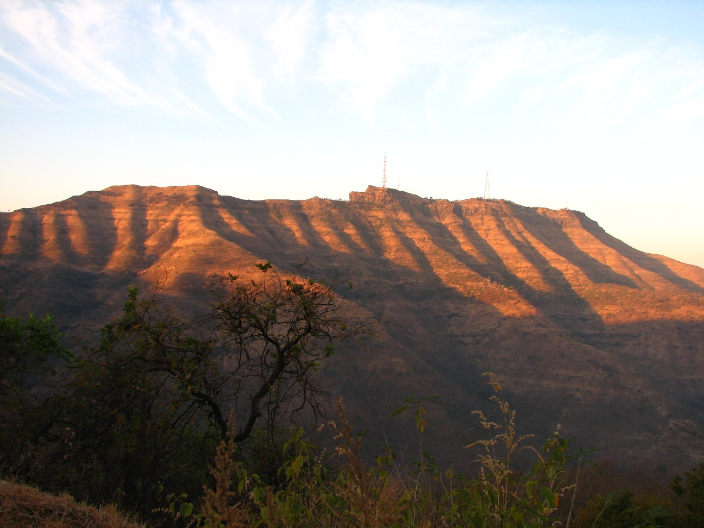

Panhala Fort in Maharashtra is an ancient hill fort with a rich history dating back to the 12th century.
It was initially built by the Shilahara dynasty and later fortified by various rulers, including the
Marathas and the Bahamani Sultanate. This massive citadel served as a strategic military outpost and
witnessed numerous battles due to its commanding position in the Sahyadri mountain range. Panhala Fort's
impressive architecture and historical significance make it a prominent heritage site, attracting
visitors who seek to explore its intriguing past and enjoy the breathtaking views of the surrounding
landscape.
Location: Kolhapur District, Maharashtra
Timings: 6:00 AM - 7:00 PM
Nearest Railway Station: Kolhapur Railway Station
Nearest Airport: Kolhapur Airport
Famous For: Trekking, Photography & Sightseeing
* Sinhagad *
Sinhagad Fort, situated in Maharashtra, holds great historical significance as a pivotal site during the
Maratha era, particularly during the Battle of Sinhagad. Perched atop the Bhuleshwar range, it served as
a crucial defensive outpost for the Maratha forces. The fort's impressive architecture and strategic
location reflect the ingenuity of the Maratha warriors. Sinhagad Fort stands as a testament to the valor
and resilience of the Maratha Empire, attracting history enthusiasts eager to learn about this important
chapter in India's past.
Location: Pune, Maharashtra
Timings: 6:00 AM - 6:00 PM
Nearest Railway Station: Pune Railway Station
Nearest Airport: Lohegaon Airport, Pune
Famous For: Trekking, Photography & Sightseeing

* Shivneri *3
Shivneri Fort, located in Maharashtra, is a historic gem and the birthplace of Chhatrapati Shivaji
Maharaj. Perched atop a hill near Junnar, it boasts stunning medieval architecture with seven gates and
a revered temple dedicated to Goddess Shivai Devi. The fort offers captivating trails and breathtaking
views, attracting history enthusiasts and nature lovers alike. The Shivneri Fort welcomes visitors to
witness the majestic Ambarkhana and immerse themselves in the legacy of one of India's greatest
warriors.
Location: Pune, Maharashtra
Timings: 6:00 AM - 5:00 PM
Nearest Railway Station: Pune Railway Station
Nearest Airport: Lohegaon Airport, Pune
Famous For: Trekking, Photography & Sightseeing